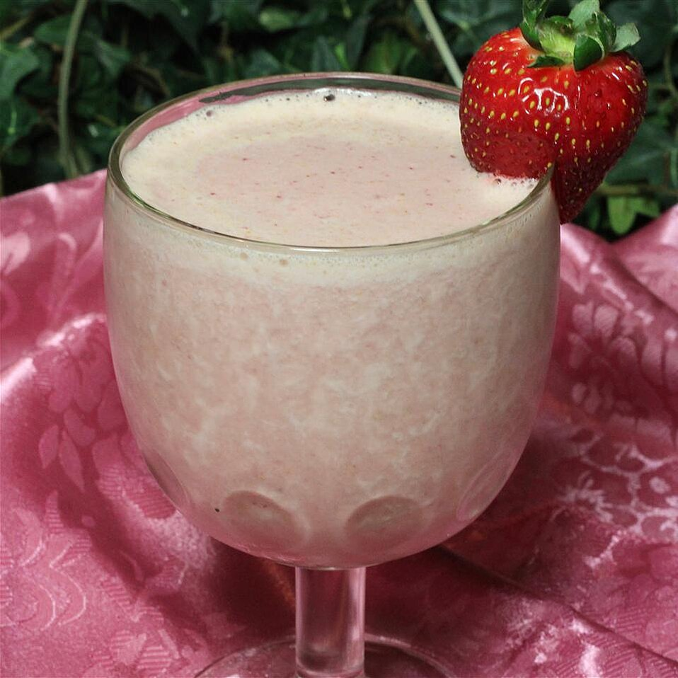

This is a healthy, versatile protein milk shake perfect for a post-workout meal, or healthy alternative to an ice cream shake for the kids. Strawberries and banana could be substituted with kiwi, pineapple, pears, mango, blueberries, etc. Get creative and enjoy!